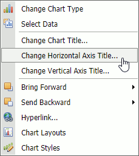

Modifying a Chart Manually
After you create a chart, you can choose whether to apply one of the predefined chart layouts or specify your own layout. The Spreadsheet provides the capability to add axis titles and chart titles, show the chart legend, display gridlines and data labels, etc.
To modify a chart, right-click it to display the context menu and select the required item or use commands provided by the Design, Layout, and Format context tabs that are displayed in the ribbon when a chart is selected.
Add a Chart Title
To add a title, select the chart and click the Chart Title command in the Labels group on the Layout context tab. Then, select where to position the chart title. For example, select the Above Chart item to display the title at the top of the chart.

The image below illustrates the result.

To change the default text in the title, right-click the chart and select the Change Chart Title... item in the context menu. Specify a new chart title in the invoked Change Chart Title dialog box.

Add Axis Titles
To display horizontal and vertical axis titles, click the Axes Titles button in the Labels group on the Layout context tab and do the following:
To add a horizontal axis title, select the Primary Horizontal Axis Title item, and then click the Title Below Axis item.
To add a vertical axis title, select the Primary Vertical Axis Title item, and then select the type of axis title (rotated, vertical or horizontal) you wish to display.
To change the default text in the axis title, right-click the chart and select the Change Horizontal Axis Title... or Change Vertical Axis Title... item in the context menu.

Type a new title in the invoked dialog box.
Add a Chart Legend
To add a legend to the chart, click the Legend button in the Labels group on the Layout context tab and select where to position the legend.
For example, select the Show Legend at Top item to display the legend above the plot area.

Display Data Labels
To display data values on the chart, click the Data Labels button in the Labels group on the Layout context tab and select where to position the data labels.

Add Gridlines
To display chart gridlines, click the Gridlines button in the Axes group on the Layout context tab and select the required gridlines options from the drop-down list.

A chart with horizontal and vertical gridlines is shown below.